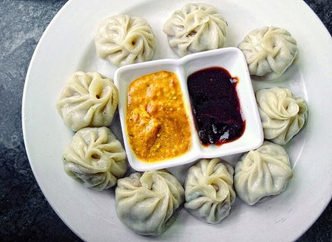
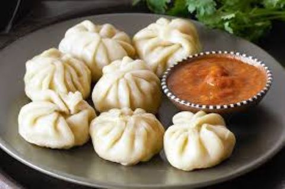
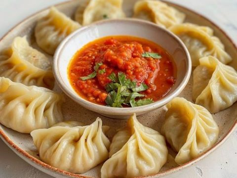
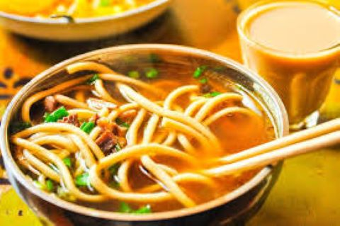
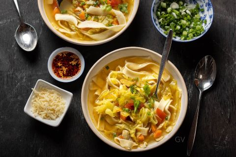
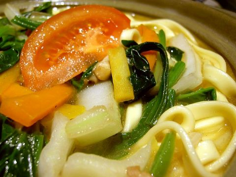
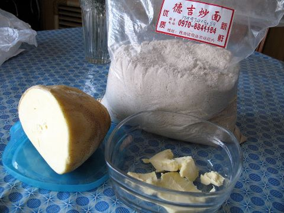
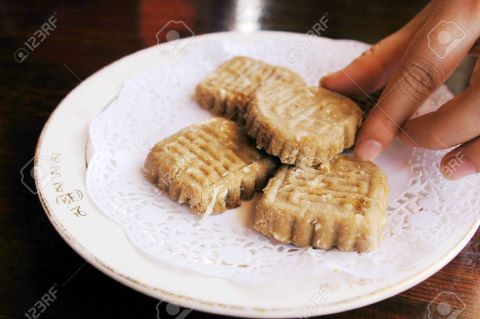
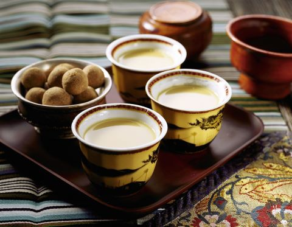

La Gastronomie au Tibet
Découvrez la gastronomie tibétaine ainsi que sa richesse sans oublier son incroyable qualité. Chaque plat tibétain offre des saveurs uniques qui ne sont présentes dans aucun un autre pays.
-
Les momos, un plat d'excellence
S’il y a un met qui symbolise la cuisine tibétaine par excellence, c’est bien le Momo. Ces boulettes de pâte généralement farcies de viande ou de légumes rappellent par leur forme les raviolis chinois, mais ont une saveur unique grâce aux épices typiquement tibétaines. Une petite anecdote à laquelle on ne peut résister : en 2015, le Momo est entré dans une compétition internationale de momos à New Delhi et a remporté la première place ! C’est dire à quel point ces petites bouchées ont le pouvoir de réconforter le cœur et l’âme !. Petite histoire pas des moindres : Selon une légende très répandue, les raviolis sont nés il y a environ 1 800 ans, au crépuscule de la dynastie Han en Chine : le médecin Zhang Zhongjing, considéré comme l'un des fondateurs de la médecine traditionnelle chinoise, aurait confectionné les premiers raviolis à partir de pâte, de viande, de piment et d'herbes pour les servir bouillis comme remède contre les morsures du gel
   -
Le Shakpa, le plat de l’amitié
Le Shakpa est un plat de viande de mouton ou de yak mijotée avec différents types de légumes. C’est un plat tibétain familial par excellence. Imaginez une soupe de nouilles faite avec amour, relevée par des saveurs épicées et accompagnée de pain Tsampa, que l’on partage entre amis ou en famille. Avec sa recette simple et ses ingrédients faciles à trouver, le Shakpa est un plat qui met l’accent sur l’essentiel : le partage et l’amitié. Les origines de ce plat : Le Shapka trouve ses racines dans la cuisine tibétaine nomade, où les habitants des hauts plateaux du Tibet devaient utiliser des ingrédients locaux et conservés, comme la viande séchée de yak. Ce plat était une source essentielle de protéines pour les Tibétains vivants dans des conditions climatiques rudes. Avec l'influence chinoise et indienne, les épices et légumes ont été progressivement intégrés, donnant au Shapka son goût riche et légèrement épicé. Il est souvent accompagné de riz ou de pain tibétain (comme le tingmo , un pain vapeur moelleux).Aujourd'hui, le Shapka est un mets populaire non seulement au Tibet, mais aussi dans les communautés tibétaines en exil, notamment en Inde et au Népal.
   -
le Tsampa, le plat national des hommes du Tibet
Impossible de finir cette liste sans mentionner le Tsampa. Plat de base de la cuisine tibétaine, il est souvent consommé avec du beurre de yak et du thé au beurre salé. Ce qui est intéressant avec le Tsampa, c’est qu’il est parfaitement adapté au climat difficile et à l’altitude du Tibet, fournissant une grande quantité d’énergie. L'incontournable histoire de ce plat : Le Tsampa remonte à plusieurs siècles et est profondément enraciné dans la culture tibétaine. L'orge, céréale résistante aux conditions extrêmes des hautes altitudes, était cultivée par les premiers habitants du Tibet et transformée en Tsampa pour sa facilité de conservation et sa richesse nutritionnelle. Les nomades et les moines bouddhistes en particulier l'apprécient pour sa simplicité : il ne nécessite pas de cuisson et peut être consommé rapidement, ce qui en fait un aliment idéal pour les longs voyages ou les retraites spirituelles. Au-delà de son rôle alimentaire, le Tsampa a une dimension symbolique dans la culture tibétaine. Il est utilisé lors de cérémonies bouddhistes, notamment lors des funérailles, où les participants jettent du Tsampa en l'air en signe de bénédiction. Aujourd'hui, le Tsampa reste un pilier de l'alimentation tibétaine et est consommé quotidiennement par de nombreuses familles, aussi bien au Tibet qu'au sein des communautés en exil.
  